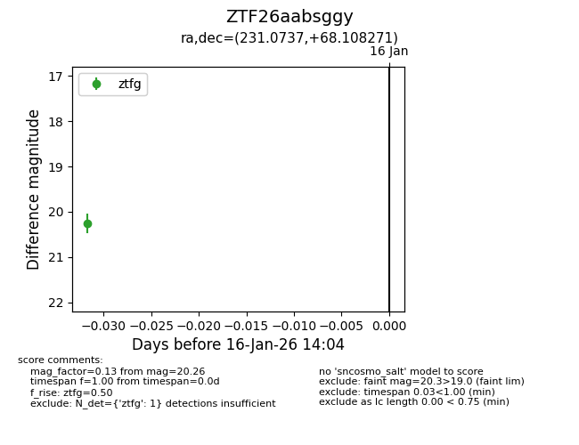
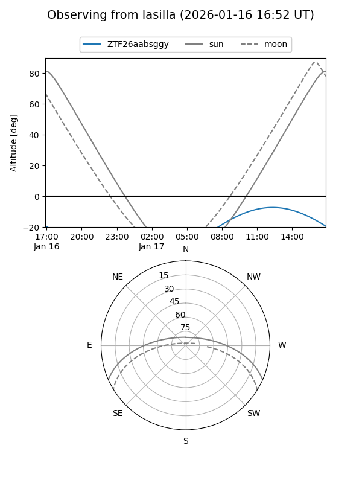
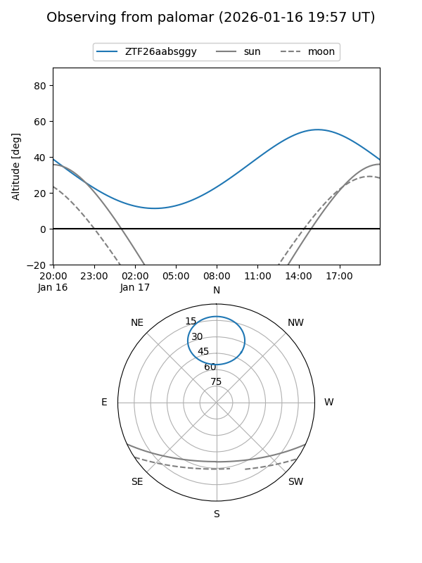

ZTF26aabsggy
Target ZTF26aabsggy at 2026-01-16 14:05
Aliases and brokers:
FINK: link
Lasair: link
ALeRCE: link
alt names
ZTF26aabsggy (ztf,fink_ztf)
Coordinates:
equatorial (ra, dec) = 231.0737,+68.10827
equatorial (HMS+DMS) = 15:24:17.69,+68:06:29.77
galactic (l, b) = (104.5040,+43.14343)
Flags:
Photometry:
last ztfg=20.26
1 ztfg detections
Lightcurve

Visibility


Additional plots